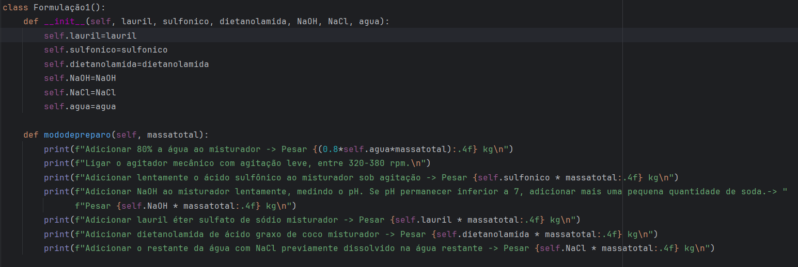
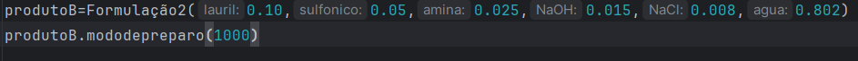
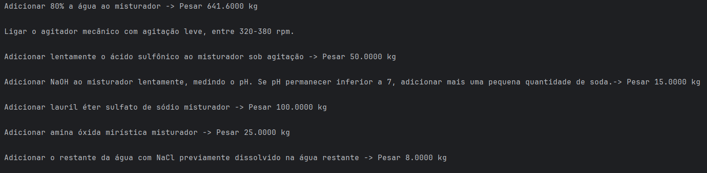

O objetivo desta postagem é desenvolver duas bases para detergentes (misturas sem adição de fragrância, corante e conservante) e comparar seu desempenho reológico, formação de espuma e aspecto visual. Além da eficiência na limpeza, busca-se obter uma formulação com viscosidade, brilho e transparência semelhantes aos detergentes comerciais, caracterizada por um aspecto translúcido e homogêneo.
Também vai ser apresentada uma formulação de base para xampu, com aspecto de um xampu comercial, incolor e sem fragrância que poderá ser complementada com acidulante, fragrância e cor para resultar em um produto comercial.
Depois de definido se as formulações resultaram em um produto adequado sob esses aspectos, será elaborada uma calculadora de formulações usando Python. Essa calculadora irá imprimir as quantidades e o passo a passo para produção de um determinado lote do detergente ou xampu. A calculadora será elaborado utilizando-se POO, Programação Orientada a Objetos.
Formulações comerciais com base em tensoativos do tipo detergente ou xampu, por exemplo, são em geral um blend de tensoativos com funções específicas. Podemos ter formulações com um dois tensoativos primários, geralmente com função de detergência ou de fazer a limpeza propriemente dita, e um ou mais co-tensoativos, com função de estabilizar a espuma ou melhorar a formação das micelas.
Como exemplo de tensoativos primários, temos o ácido sulfônico e o lauril éter sulfato de sódio que são largamente usados em soluções de limpeza (louça, limpeza pesada de graxa) e soluções de higiene (xampu ou sabonete líquido). Esses dois tensoativos são do tipo aniônicos, os principais ativos que atuam na detergência usados em formulações comerciais. O sulfônico tem maior capacidade de detergência e limpeza pesada, enquanto que o lauril tem maior solubilidade e estabiliza as micelas em solução, mas também tem poder de limpeza.
Como co-tensoativos, alguns que são bastante presente nas formulações comerciais são dietanolamida de ácido graxo de coco, amina óxida mirística e coco amido propil betaína. A dietanolamina de ácido graxo de coco é um tensoativo que ajuda na formação de espuma (aspecto ligado à sensação de limpeza), ajuda no aumento da viscosidade e na transparência do produto. Ela é um tensoativo não-iônico. A amina óxida mirística é um tensoativo anfótero, com função de estabilizar a espuma e espessante. Já o coco amido propil betaína é um tensoativo anfótero que pode ajudar no aumento da viscosidade.
E linhas gerais, temos que os tensoativos aniônicos são os principais atuadores na limpeza propriamente dita, enquando que os outros tensoativos (não-iônicos e anfóteros) tem características secundárias e, em geral, aparecem em formulações de higiene pessoal, pois são menos irritantes à pele e aos olhos do que os aniônicos.
A primeira base para detergente formulada é apresentada na Tabela 1. Os tensoativos primários utilizados são ácido sulfônico 90% e Lauril éter sulfato de sódio 27% com concentrações de 5% e 10% respectivamente. O co-tensoativo utilizado é a dietanolamida de ácido graxo de coco, com uma conentração de 2%. A neutralização do ácido sulfônico é realizada com NaOH, cerca de 1,5% e o ganho de viscosidade é feito com o sal NaCl com cerca de 0,4%. O restante da formulação é água potável.
Primeiramente, coloca-se 80% da água no misturador e acrescenta-se lentamente o ácido sulfônico com agitação de baixa a média (entre 380 e 500 rpm). Não se pode ter uma agitação muito elevada pois pode formar espuma excessiva. Após a misturação do ácido sulfônico, deve-se medir o pH com fita indicadora. Coloca-se então a soda aos poucos e acompanha-se o pH que deve se aproximar do pH neutro. Depois desse ajuste, deve-se acrescentar o lauril, seguido da dietanolamida. Depois de homogeneizar esses reagentes, deve-se acrescentar o sal dissolvido no restante da água. Nesse instante será perceptível um aumento considerável da viscosidade. Deve-se deixar agitando por cerca de 15 minutos e a mistura estará pronta.
| Componente | % (m/m) | kg |
|---|---|---|
| Ácido sulfônico 90% | 5 % | 0,100 kg |
| Lauril éter sulfato de sódio 27% | 10 % | 0,200 kg |
| Dietnolamina de ácido graxo de coco | 2 % | 0,040 kg |
| NaOH | 1,5 % | 0,030 kg |
| NaCl | 0,4 % | 0,008 kg |
| Água | q.s.p. 100 % | 1,622 kg |
A segunda base para detergente formulada é apresentada na Tabela 2. Os tensoativos primários utilizados são ácido sulfônico 90% e lauril éter sulfato de sódio 27% com concentrações de 5% e 10% respectivamente. O co-tensoativo utilizado é a amina óxida mirística, com uma concentração de 2,5%. A neutralização do ácido sulfônico é realizada com NaOH, cerca de 1,5% e o ganho de viscosidade é feito com o sal NaCl com cerca de 0,8%. O restante da formulação é água potável.
Primeiramente, coloca-se 80% da água no misturuador e acrescenta-se lentamente o ácido sulfônico com agitação de baixa a média (entre 380 e 500 rpm). Não pode-se ter uma agitação muito elevada pois pode formar espuma excessiva. Após a misturação do ácido sulfônico, deve-se medir o pH com fita indicadora. Coloca-se então a soda aos poucos e acompanha-se o pH que deve se aproximar do pH neutro. Depois desse ajuste, deve-se acescentar o lauril, seguido da amina óxida. Depois de homogeneizar esses reagentes, deve-se acrescentar o sal dissolvido no restante da água. Nesse instante será perceptível um aumento considerável da viscosidade. Deve-se deixar agitando por cerca de 15 minutos e a mistura estará pronta.
| Componente | % (m/m) | kg |
|---|---|---|
| Ácido sulfônico 90% | 5 % | 0,100 kg |
| Lauril éter sulfato de sódio 27% | 10 % | 0,200 kg |
| Amina Óxida Mirística | 2,5 % | 0,050 kg |
| NaOH | 1,5 % | 0,030 kg |
| NaCl | 0,8 % | 0,016 kg |
| Água | q.s.p. 100 % | 1,604 kg |
A terceira formulação é uma base para xampu. A composição é mostrada na Tabela 3. O tensoativo primário utilizando é o lauril éter sulfato de sódio 27% com concentração de 40%. Os co-tensoativos utilizados são a dietanolamida de ácido graxo de coco e o coco amido propil betaína, ambos com concentração de 2% e o ganho de viscosidade é feito com o sal NaCl com cerca de 1%. O restante da formulação é água potável.
Primeiramente, coloca-se 80% da água no misturuador e acrescenta-se o lauril lentamente, com agitação média. Depois prossegue-se com a adição da dietanolamida e do coco amido propil betaína. Depois de homogeneizar esses reagentes, deve-se acrescentar o sal dissolvido no restante da água. Nesse instante será perceptível um aumento considerável da viscosidade. Deve-se deixar agitando por cerca de 15 minutos e a mistura estará pronta.
| Componente | % (m/m) | kg |
|---|---|---|
| Lauril éter sulfato de sódio 27% | 40 % | 0,800 kg |
| Dietanolamida de ácido graxo de coco | 2 % | 0,040 kg |
| Coco amido propil betaína | 2 % | 0,040 kg |
| NaCl | 1 % | 0,020 kg |
| Água | q.s.p. 100 % | 1,100 kg |
A primeira formalação resultou num detergente com boa formação de espuma e viscosidade média. O produto ficou translúcido e límpido, como detergente comercial. Sua viscosidade ficou em cerca de 300 mPa.s. O detergente proporcionou a formação de uma espuma consistente e abundante. Para virar um produto comercial, é necessário adicionar um corante, um aroma e um conservante, para evitar a formação de mal cheiro. O aspecto do produto pode ser visto no vídeo a seguir.
A segunda formação resultou num produto com as mesmas característica da formulação anterior, porém com uma viscosidade de 420 mPa.s, um pouco acima da Formulação #1. Foi colocado uma quantidade maior de sal nessa Formulação #2. O aspecto do produto é mostrado no video a seguir.
A terceira formulação apresentou uma viscosidade muito mais elevada, de 5000 mPa.s. Ficou com aspecto translúcido e brilhoso. O xampu precisa ser mais viscoso que um detergente ou sabonete líquido para evitar perda/desperdício do produto. Apresentou formação abundante de espuma. Para virar um xampu comercial, deve ser acrescentado nessa base de xampu fragrância, cor, um acidulante como ácido cítrico para conrole do pH e um umectante como a glicerina.
Nessa seção, como é o objetivo do Química Programada, vamos integrar o material do artigo de química com programação. Vamos demonstrar como podemos utilizar POO (Programação Orientada a Objetos) para fazer uma calculadora de formulação de detergente ou xampu, que ao receber os dados de entrada da concentração dos reagente, imprima um passo a passo com as quantidades a serem misturadas para produção de um lote do produto.
Na Figura 1 é apresentada a estrutura da classe criada em Python para representar a Formulação #1. Ela apresenta seus atributos que são as concentrações das diferentes matérias-primas que são usadas para sua produção. Quando for instanciada a classe para criação de um objeto, todas as concentrações da classe deverão ser especificadas. Além dos atributos, a classe apresenta um método que calcula a massa de cada reagente que deve ser usada para produção de um lote de produto com uma certa massa que também deve ser especificada.

Na Figura 2 é feita uma instanciação da classe formulação, criando um objeto chamado produtoB. Esse produto tem as concentraçãoes de cada matéria-prima especificadas conforme mostrado na figura. Depois de instanciar a classe é possível calcular pelo método modedepreparo as quantidades que devem ser adicionadas ao reator para produção de um determinado lote de 1000 kg do produto B. As quantidades serão impressas no console conforme apresentado na Figura 3.


Desenvolvimento : Química Programada